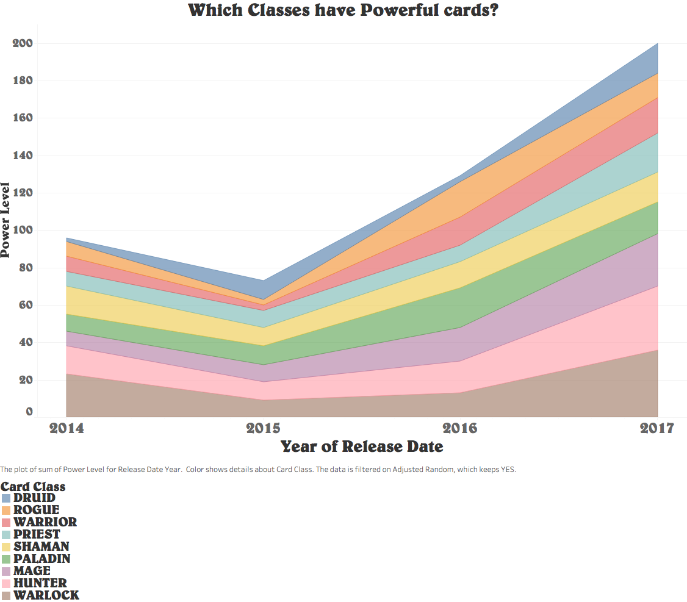
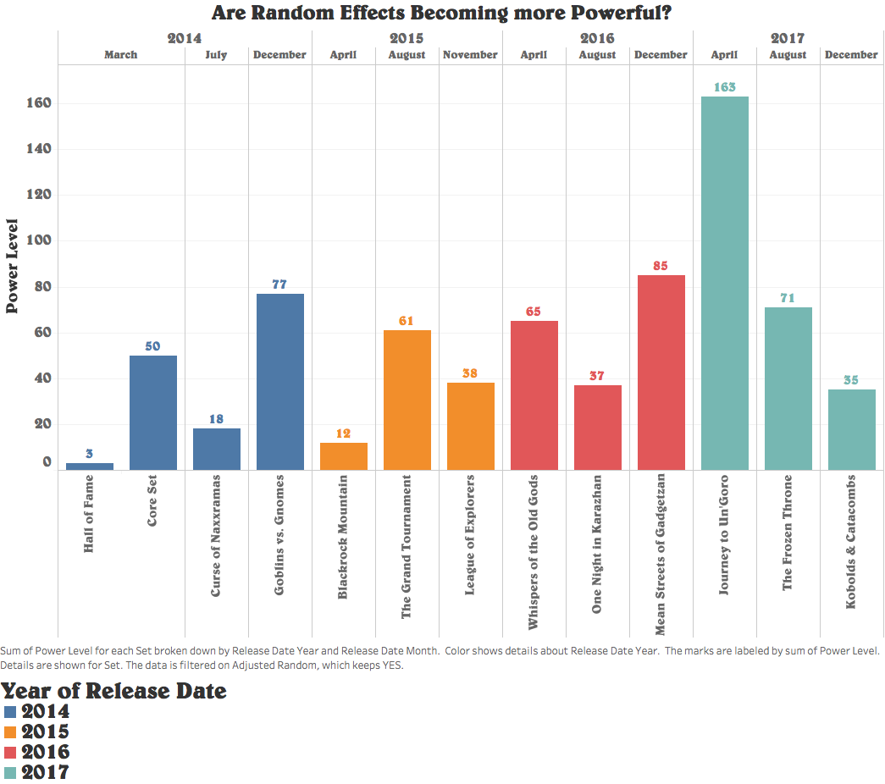
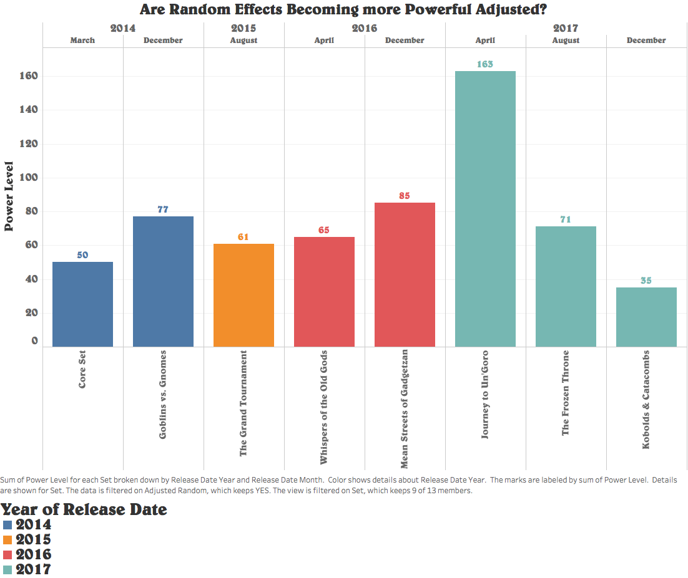
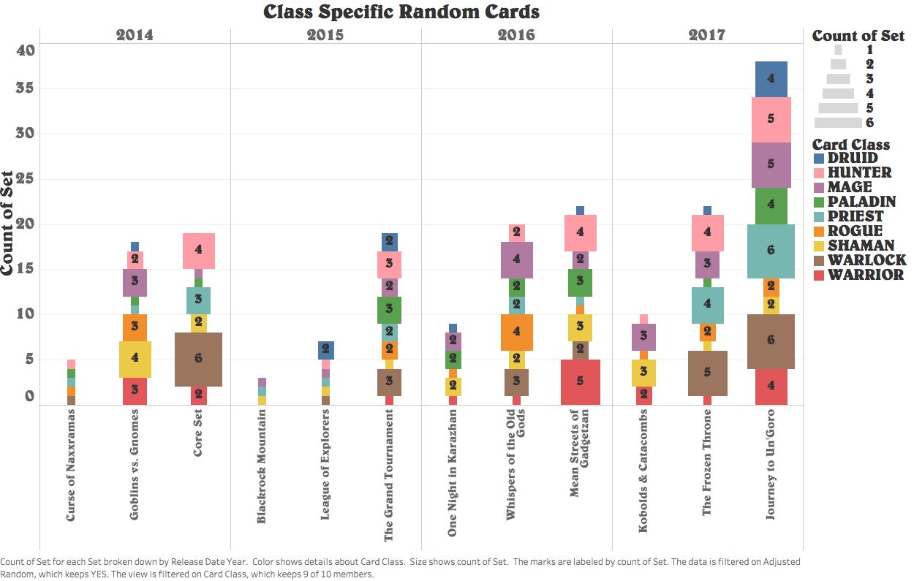
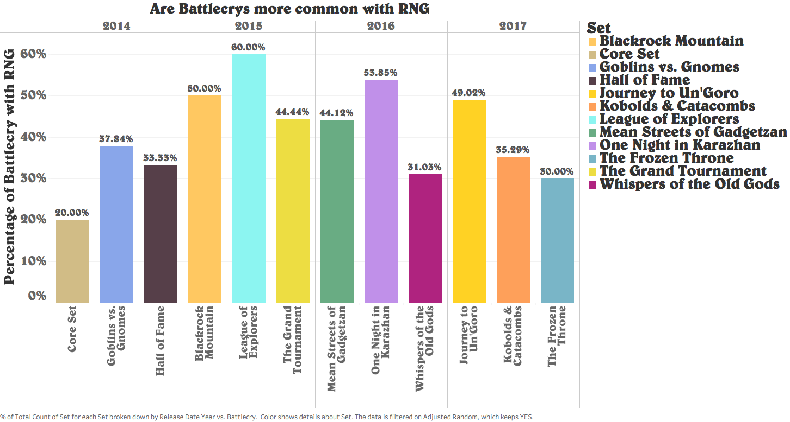

Define RNG:
I began to codify my intuition into a more programmatic assessment on powerful cards.
First, I created the following grading scheme to define and assign Power Level to cards.
For each of the criteria below that is satisfied the card is given one point.

Results:
With the beginning of 2017 and the expansion Journey to Un'Goro, we see a massive spike in power level.
In later expansions, we see a decline in power level. A possible explanation for this could be that Blizzard
is trying to refine gameplay rather then increase the power of cards, particularly cards with random effects.
These are one of the most challenging cards to balance in the game due to their unpredictability.
However, if we look at their RNG factor within the classes and their power level, we can see a trend upwards
for all classes regarding RNG and power level
Are the interactions between RNG cards contained within a particular class? Or are all classes evenly given the RNG cards?

Observations
For this question, I wanted to give viewers a more enticing visual aesthetic, while allowing users to take in more information at a glance. The motivation behind this decision was to show how RNG cards are distributed across the classes and whether or not any class had more RNG easily.
Step 1:
I first started with the Release Date and Expansions positioning them as my columns and then with a count function on Set, as my row.
Step 2:
I then filtered by “Adjusted Random” equal to YES and my Card Class field to Mark based on color and again a count on Set to change the size of the bars based on the number of RNG cards for that class.
Results:
After examining the results of the graph, we can see that in the later part of the Year cards tend to be more random-based, starting in 2015, increasing in 2016, as well as finally reaching its highest in 2017. We can see that in 2015, and in the later part of 2016 and 2017 class cards with RNG factors start to increase. Again, we can see that Un'Goro is leading the pack with a considerable amount of RNG within each hero class. This still makes sense because the introduction of Un'Goro came at the tail end of a bunch of retiring cards.
What are the most powerful RNG based cards Spells? or Minions?
Objective:
This question was one of the easier ones due to the limited number of types within Hearthstone. Types are very similar to modes of transportation such as air, land, and sea. Cards can be one of 4 types: Hero, Weapon, Spell, and Minion, with Minions and Spells being the largest of the 4.
Step 1:
Here I created a Bubble Map that allows users to see with a simple glance that Minions with RNG are far more common than Spells.
Step 2:
The bubbles are sized according to the Sum of the power contained within each expansion, of which includes an RNG component. The Color is mapped to the Type of card for easy viewing.
Results:
If we look at the number of spells in Hearthstone compared the Number of Minions, Minions outnumber the spells by far. It stands that a reasonable conclusion would be to continue this trend with RNG-based cards.
This last question didn't harbor any surprises for me. I knew that there were more minions than spells in the game. What I didn't know is if the RNG played a prominent enough role in tipping the RNG factor into the into the Spells' favor.
However based on the graph Minions with an RNG factor hold a disproportionately large dominance over Spells, with Spells coming second and Weapons and Heroes tailing the pack.
Are Battlecrys more common with RNG or Deathrattles?
Objective:
I wanted to give users a more interactive way to see the cards. After all, not everyone plays Hearthstone.
I embedded both RNG-based Battlecries and Deathrattles into my site to give the user some freedom to explore. However, these graphs lack discrete values, but this way users can see the cards and get a better feel for the game while still answering the question: which of the two has more interaction with RNG? It seems that Deathrattles have more cards overall than Battlecries. Battlecries give you the benefit right away, however, Deathrattles cards must die before the reward can be used. So, what we see is far more Deathrattles with random effects than Battlecries.
Step 1:
Images were mapped to shapes which were then used by a "Map Image" filled with card IDs.
Step 2:
I then put the Rows as the Cost field which corresponded to the Mana cost of each card.
Step 3:
The size of each card was then marked using Power Level. The larger the card appears to be, the more power it has.
Result:
It occurred to me while I was trying to find out which of the two was more common, I also needed to define what common meant in the context of Hearthstone. Eventually, I came to define common as a percentage of the expansion that has Battlecries and or Deathrattles as a mechanic as well as RNG.
After examining both the Deathrattles and Battlecries, the results are notably evident that Battlecries are much more common to have RNG than Deathrattles are.
As to why that is, I can only speculate. But, my intuition tells me: knowing that Battlecries are more powerful than Deathrattle in most cases, it is likely that Blizzard wanted to create more powerful cards in general, so they paired RNG components with more Battlecries.
